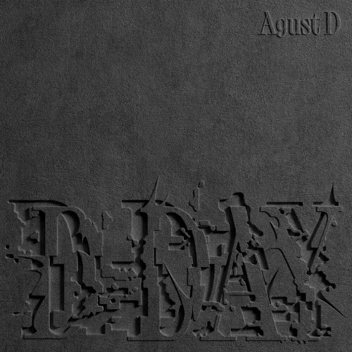

Nome verdadeiro: Min Yoon-gi (민윤기).
Cidade natal: Buk-gu, Daegu, Coreia do Sul.
Data de nascimento: 9 de março de 1993.
No BTS: rapper, compositor e produtor.
O rapper Suga, optou por um personagem um tanto quanto inusitado: um cookie! A figura recebeu o nome Shooky. Apesar de ser pequeno, tem grande atitude e adora pregar peças, especialmente as que são feitas para os amigos. No entanto, se tem uma coisa que ele odeia, é leite. Ele é melhor amigo de Cooky, o personagem criado por Jungkook. Durante o período inicial de esboço, Suga não tinha a ideia de desenhar um biscoito. No início, o artista desenhou seu cachorro, Holly, mas alegou que estava muito parecido com outros personagens, então ele desenhou muitas expressões diferentes inspiradas em Holly. Assim, os designers da Line Friends adaptaram as ideias de Suga e as transformaram no personagem.

Aos 13 anos, Suga começou a se interessar por compor e produzir músicas. Mas foi aos 17 que ele começaria de fato sua carreira, ao integrar o grupo de rap underground D-Town. Chegou a passar dificuldades financeiras neste período, mas seguiu persistindo na música. Em 2010, Suga participou das audições Hit It, da Big Hit Entertainment, e foi selecionado para o time da agência em segundo lugar.
Na banda, além de atuar como compositor, é o integrante mais ativo na produção das músicas. Fala abertamente e milita nas causas de problemas mentais e na luta da comunidade LGBTQI+.
O astro coreano divulgou seu tão esperado álbum de estreia D-Day na sexta-feira (21 de abril), e, como muitos outros lançamentos envolvendo o BTS, o artista levou só algumas horas para bater um novíssimo recorde. O músico Agust D (alterego de Suga), agora detém não apenas o disco mais vendido em seu país natal, mas também o disco de rap com maiores vendas na história em sua estreia.
